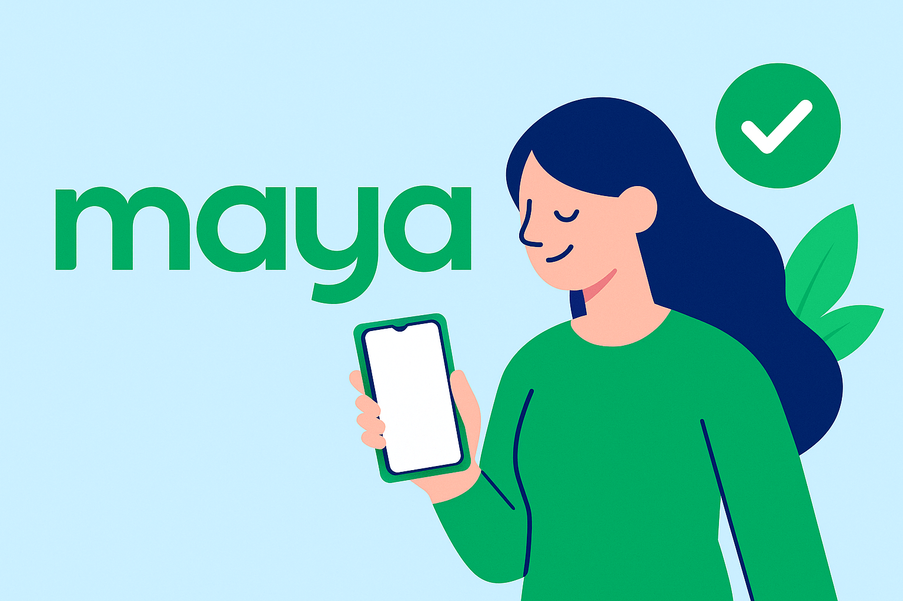

Let’s be real — nobody enjoys long lines, busy bank branches, or
outdated banking apps that crash half the time. Minsan tamad tayong
pumila, ‘di ba? That’s why more and more Pinoys are switching to
digital banks, and honestly, it might be one of the smartest money
moves you’ll make this year.
So… what is a digital bank?
A digital bank works just like a traditional bank — you can deposit,
withdraw, save, and even apply for loans — but everything is done
online. No physical branches, no paperwork, no need to dress up just
to open an account.
Think of it as a bank that lives in your phone.
Why are Pinoys loving it?
✅ Higher interest rates – Maya and SeaBank offer
up to 10–14% p.a. (promo-based), way more than your regular bank’s
0.10%.
✅ No minimum balance – Perfect for beginners or
those starting small.
✅ Convenient AF – Open an account in minutes,
anytime, anywhere.
✅ 24/7 access – Manage your money kahit nasa bed
ka pa.

Maya
Earn up to 14% interest, pay bills, shop online, and save with
no minimum balance. Maya offers virtual cards, crypto, and
goal-based savings in one sleek, secure app.
CIMB
Save with up to 4% interest via UpSave or GSave, enjoy zero
fees, no maintaining balance, and access personal loans
through CIMB’s secure, user-friendly digital banking platform.
Tonik
Grow your money fast with up to 6% interest on time deposits
and 4.5% on stashes. Tonik offers visual savings tools, zero
fees, and easy, fast loan approvals.
Seabank
Earn daily interest up to 4% with no fees or balance
requirements. Seamlessly link to Shopee, transfer instantly,
and save more every day with SeaBank’s simple,
beginner-friendly app.
GoTyme
Earn 3% interest, get a free custom Visa card instantly at
Robinsons, enjoy rewards, no fees, and real-time
transactions—all through GoTyme’s digital banking app built
for Filipinos.
UNOBank
Earn up to 6.5% interest with UNOBank’s high-yield savings and
term deposits. No minimum balance, fast onboarding, and a
user-first app designed for secure, rewarding digital banking
experiences.
These are BSP-regulated, so safe sila to use — just like traditional
banks.
Is it safe?
Yes, as long as you stick to BSP-licensed digital banks, your money is
insured by PDIC up to ₱1,000,000. Just be sure to practice good
habits: strong passwords, 2FA (if available), and don’t share your
OTPs!
Opening an account? Sobrang dali.
All you need is a registered and active SIM card, a valid
government-issued ID, a smartphone, and a stable internet connection.
That’s it. Open the app, register using your SIM card number, upload
your ID, take a selfie, and boom — may digital bank ka na.
Final thoughts
If you’re new to saving or tired of your regular bank’s low returns
and slow service, give digital banking a shot. You’ll earn more, save
easier, and manage your money without stress. G ka na ba to go fully
digital?
Start small, start smart — your future self will thank you. Let
PesoBuddy guide you along the way. 💚